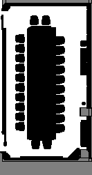

仿真 → FAST-LIVO2 建图联动自验证
本报告只覆盖当前阶段：使用 data/ 下的 839873 Gaussian、碰撞 USD 和 occupancy 数据，让仿真产生可供 FAST-LIVO2 lidar-only 建图消费的 LiDAR + IMU 输入。定位、导航 processor、NeuPAN/track2、/cmd_vel2 闭环暂不纳入本次验收。
1. 一条建图输入链
数据边界：仿真 odom/root state 仅用于运动和自验证；FAST-LIVO2 正式建图应只依赖它订阅到的 LiDAR + IMU。RGB-D 当前不进入这条 lidar-only 建图链。
2. 巡航如何逐周期生成并应用 vx、vy、omega
2.1 路径来源
当前没有依赖不存在的外部路径 JSON。启动时读取 data/occupancy.png 和带空格文件名的 data/occupancy .json，按 0.05 m 像素比例计算 free-space clearance，选最大安全连通区域的竖直走廊，生成 3 个 scene-frame waypoint。
本次路线起点约为 (1.405, -9.965)，中点约为 (1.405, -5.765)，终点约为 (1.405, -1.615)，安全 clearance 均满足 0.45 m 要求；路径只驱动仿真，不冒充 /clicked_path 或定位结果。
2.2 一个控制周期
每个 20 ms 控制周期先检查 ROS 速度命令；若有命令则它优先，否则巡航器读取 Go2 当前位姿并计算 waypoint 误差。巡航器将世界系误差转换到机器人 body 系：forward = cos(yaw)*dx + sin(yaw)*dy；lateral = -sin(yaw)*dx + cos(yaw)*dy；角度误差按 atan2(sin,cos) 归一化。
2.3 三个控制量
vx = clip(0.7*forward, -0.4, 0.4)*scale；vy = clip(0.8*lateral, -0.1, 0.1)*scale；omega = clip(1.2*yaw_error, -0.6, 0.6)。
这里不是 vz：控制语义对应 linear.x=vx、linear.y=vy、angular.z=omega，linear.z 不参与平面行走。
读取 /cmd_vel（如有则优先） → 否则巡航器更新 vx/vy/omega
→ 写入 ctrl.base_vel_cmd_input[0]（仿真内部，不经 ROS 话题发布）
→ 重新计算 observation → frozen flat policy(obs) → env.step(actions)
→ 每控制周期 5 ms 物理子步 × 4 → Go2 位姿/速度变化
→ IMU physics callback 200 Hz；LiDAR 10 Hz 对移动后的传感器位姿射线求交
→ 文件桥传输 LiDAR/IMU 样本 → ROS2 发布 /livox/lidar 与 /livox/imu
vx/vy/omega 发布到 /cmd_vel。它使机器人在 occupancy 航点间运动；LiDAR 和 IMU 随物理状态采样，再由 bridge 发布给 FAST-LIVO2。只有外部 ROS 速度命令才走 bridge 的反向控制通道。3. LiDAR 与 IMU 如何仿真
| 阶段 | 仿真动作 | 输出语义 | 本次证据 |
|---|---|---|---|
| 场景加载 | 直接加载 data/839873_collision.usd；RGB 使用 data/839873.usdz；不加 synthetic ground，不平移。 | Gaussian 与 metric mesh 共享 data/ 原位坐标。 | 通过 60 meshes / source hash。 |
| LiDAR几何 | 每 0.1 s 生成 20,000 条 MID360 覆盖近似射线，使用 Warp CUDA 对 collision USD 三角形求交。 | 有效点来自真实三角形，不用随机噪声点。 | 通过 最后一帧 19,937 returns。 |
| 点时间 | 按 5 us firing cadence 生成每个返回点的纳秒时间，起点与本帧 header stamp 相同；同一消息内两者使用仿真时钟。 | timestamp 是 PointCloud2 内逐点 FLOAT64 纳秒字段；仿真时钟不等于 Unix/rosbag epoch。 | 仿真侧通过 1,209,999,972.95 到 1,309,994,972.95 ns，跨度 99.995 ms。 |
| IMU | Isaac Lab 刚体 IMU 物理 callback 每 5 ms 采样，发布 200 Hz。 | 角速度与比力来自物理传感器；ROS 姿态使用 bag 约定的 identity，不宣称融合真值。 | 通过 240 samples / 200.000 Hz。 |
| 噪声 | 不复刻真实噪声、反射率、Livox 专有扫描轨迹或 motion distortion。 | 目标是算法接口兼容和足够点密度，不是硬件噪声等效。 | 明确限制 |
4. FAST-LIVO2 实际会怎样接收和利用
4.1 点云入口
ROS2 文件桥把仿真保存的 xyz 与 aux 数组组装成 sensor_msgs/msg/PointCloud2，同时发布到 /livox/lidar。消息 header 为 frame_id=livox_frame，QoS 为 reliable、keep-last、depth 256、volatile，与真实 bag 元数据一致。
真实 bag 第一帧实测字段为 x,y,z,intensity,tag,line,timestamp，offset 分别为 0,4,8,12,16,17,18，point_step=26；仿真构造器严格采用同样布局。
4.2 FAST-LIVO2 预处理
mid360.yaml 设置 lidar_type=7，说明走标准 PointCloud2 分支；point_filter_num=3、filter_size_surf=0.5、scan_line=4、blind=0.1。
真机建图日志实测约 19,968–20,064 点输入，预处理输出约 3,179–3,220 点；这不是简单每 3 点保留 1 点的结果。仿真 smoke 有 19,937 个返回点，密度处于相近数量级，但仿真帧尚未通过算法，不能把真机日志输出数当作仿真实测。
时间字段还存在待解释的口径差：bag 原始首帧逐点时间跨度约 100.266 ms，而 FAST-LIVO2 日志中同类 19,968 点帧的 last_curv 约 83.19 ms。当前只有已安装二进制与运行日志，没有对应预处理源码，不能确认两者如何换算；必须用仿真输入跑算法日志再判断。
4.3 IMU 紧耦合
FAST-LIVO2 订阅 /livox/imu，按 imu_int_frame=30 积分，使用 acc_cov=0.5、gyr_cov=0.3、bias covariance 0.0001、时间偏移 0。
LiDAR→IMU 外参由算法 YAML 负责：T=[-0.011,-0.02329,0.04412]、R=I。仿真不再把这个内部外参重复烘焙进点坐标。
5. 字段、QoS、frame 与外参对照
| 项目 | 真实 bag / 建图基准 | 当前仿真 | 判断 |
|---|---|---|---|
| LiDAR topic/type | /livox/lidar / PointCloud2；约 10 Hz；lidar_type=7 | 同 topic/type；由 collision USD 求交；10 Hz tick | 接口一致 |
| PointCloud2 fields | xyz + intensity/tag/line/timestamp，26 bytes | 同字段、offset、datatype、point_step；intensity/tag 为明确的零值模型 | 结构一致 |
| 逐点 timestamp | FLOAT64 纳秒绝对时间；实测首点等于 header stamp，原始跨度约 100.266 ms；算法日志 last_curv≈83.19 ms | FLOAT64 纳秒；首点从仿真 header stamp 起算，扫描跨度 99.995 ms；FAST-LIVO2 解析结果未测 | 字段布局匹配；clock epoch 与算法相对时间映射待验证 |
| LiDAR QoS | reliable / depth 256 / volatile | reliable / depth 256 / volatile | 一致 |
| IMU topic/type | /livox/imu / sensor_msgs/Imu；约 200 Hz | 同 topic/type；200 Hz；frame=livox_frame | 接口一致 |
| 消息 frame | bag 的 LiDAR 与 IMU 都是 livox_frame | raw 两者都是 livox_frame；另发 body→lidar_livox alias TF | raw对齐 |
| body→LiDAR TF | 导航脚本固定为 [0.187,0,0.0803] + Y 轴 13°，child=lidar_livox | 同一参数；livox_frame 也提供同参数 alias，raw 数据不改名 | 适配层统一 |
| LiDAR→IMU外参 | FAST-LIVO2 YAML：[-0.011,-0.02329,0.04412]、R=I | 保留给 FAST-LIVO2；IMU body 安装位置由 body→LiDAR 与该向量组合得到 | 不重复变换 |
| map→body | 定位脚本从 /slam/lidar_pose 发布，语义风险尚未在算法代码内消除 | 本阶段不发布 map→body 定位真值；只发仿真 odom→body 对照 | 暂不进入建图 |
6. 可视化证据

data/839873.usdz，无 recenter、无平移。/clicked_path。运行证据
reports/mapping-link-smoke-final/smoke.json：pass=true，60 steps，RGBD、LiDAR、IMU 200 Hz 检查均通过。
scene_evidence.json：60 mesh，60 个 CollisionAPI/ MeshCollisionAPI，Gaussian 1,445,429 个，support hit=true，source transform=identity。
当前帧字段样本
最后共享数据：19,937 个 xyz 点；aux 中有 intensity、timestamp、tag、line、distance、azimuth、elevation。PointCloud2 的 timestamp 为 FLOAT64 纳秒，line 为 0..3。bag 首点与 header stamp 对齐；仿真使用自己的仿真时钟 epoch。
本次未启动 ROS2 文件桥和 FAST-LIVO2 进程，因此 DDS 实际接收、仿真 timestamp 被算法解析、仿真预处理点数及建图结果都未验证。
7. 验收矩阵与下一步
| 检查项 | 状态 | 说明 |
|---|---|---|
| 使用 data/ 原位 Gaussian/mesh/occupancy | 通过 | 代码不读取 source_frame_backup，不使用 recenter 或 scene_frame 平移。 |
| occupancy 安全巡航与 Go2 物理运动 | 通过 | 自动生成 scene-frame waypoint；flat policy 进入 60 步主循环。 |
| PointCloud2 结构、QoS、frame alias | 仿真侧完成 | 字段布局、QoS、raw frame 与 bag 对齐；ROS/DDS 端到端尚未运行。 |
| 点密度与逐点时间 | 接口侧通过 | 20,000 planned rays/frame；最后一帧 19,937 returns；仿真跨度 99.995 ms。真机原始跨度 100.266 ms，但 FAST-LIVO2 日志 last_curv≈83.19 ms，算法相对时间映射待确认。 |
| ROS2 bridge → FAST-LIVO2 实际接收 | 未验证 | 尚未在 Foxy chroot 启动建图节点并检查其输出。 |
| FAST-LIVO2 → SC-PGO 地图结果 | 未验证 | 尚未生成当前仿真输入对应的 GlobalMap/轨迹。 |
| 定位、导航、clicked_path、cmd_vel2 | 本阶段不做 | 待建图输入链稳定后再处理，跟随模式也不在短期目标。 |
ros2 topic echo /livox/imu、ros2 topic hz /livox/lidar、PointCloud2 fields/point_step/frame/QoS；再启动只读的 FAST-LIVO2 mapping，保存其日志、/aft_mapped_to_init、/cloud_registered_local 和 map 文件。只有这一步完成，才能把本报告的“仿真侧输入兼容”升级为“建图联动通过”。